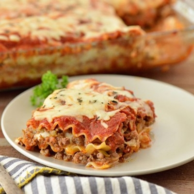
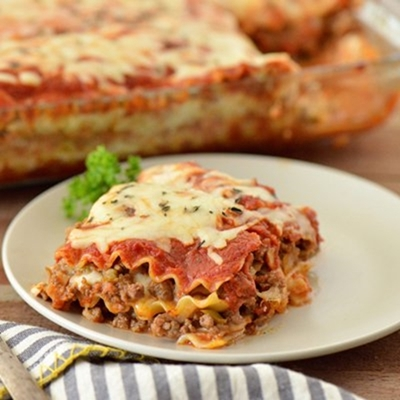

Imagenes de gatos:
Haz click aqui para ver mas imagenes de gatos.

Listas de Gatos
Cosas que los gatos aman:
- Menta gatuna
Apuntadores- Lasagna
 

Cosas que los gatos odian:
- Tratamientos antipulgas
- Truenos
- Otros gatos